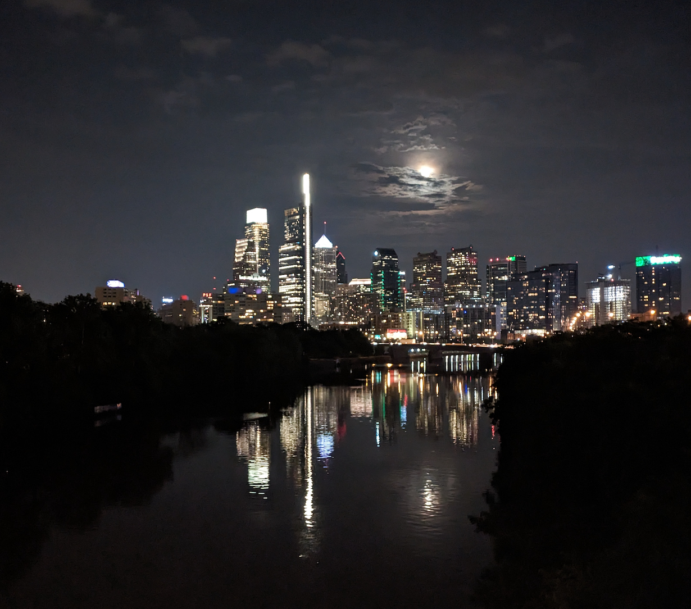

JUAN CERVINO

Postdoctoral Researcher
Massachusetts Institute of Technology
jcervino@mit.edu
Google Scholar
Resume / Github / Linkedin / Twitter
About me
I am a postdoctoral researcher at MIT, hosted by Navid Azizan. Previously, I was a PhD student in Electrical and System Engineering (ESE) at the University of Pennsylvania, where I was fortunate to be advised by Alejandro Ribeiro. I am interested in seeing machine learning through the lens of optimization theory. My interests include machine learning, signal processing, optimization, and control. Recently, I was named a rising star in signal processing at ICASSP 2023. In summer 2023, I interned on Google's Geometric AI team led by Ameesh Makadia.
I was born in Montevideo, Uruguay, where I graduated from Universidad de la República in 2018 with a degree in Electrical Engineering. I have over two years of industry experience in implantable medical devices, industrial control, and robotics. I completed my undergraduate internship in implantable medical devices at Integer.
Bio
Juan is a postdoctoral researcher in the Laboratory for Information and Decision Systems (LIDS) at the Massachusetts Institute of Technology, hosted by Professor Navid Azizan. Previously, he was a PhD student in the Department of Electrical and Systems Engineering (ESE) at the University of Pennsylvania, supervised by Professor Alejandro Ribeiro. In 2023, Juan was named a Rising Star in Signal Processing. He received his B.Sc. degree in Electrical Engineering from the Universidad de la República Oriental del Uruguay, Montevideo, in 2018. His current research interests include machine learning, signal processing, optimization, and control.
Research
2025
Distributed Training of Large Graph Neural Networks with Variable Communication Rates
Juan Cervino, Hesham Mostafa, Adam Grabowski, Md Asadullah Turja, Nageen Himayat, Alejandro Ribeiro
IEEE Transactions on Signal and Information Processing over Networks (TSIPN).[PDF]
2024
Graph Machine Learning Under Requirements
Juan Cervino
Ph.D. Thesis.[PDF]
2023
Learning by Transference: Training Graph Neural Networks on Growing Graphs
Juan Cervino, Luana Ruiz, Alejandro Ribeiro
IEEE Transactions on Signal Processing.[PDF]
2022
2021
2020
2019
Personal
On a personal note, I am a stereotypical uruguayan: I drink mate every day, I play soccer every week, and I take the opposite side on every discussion.
I was born and raised in the beautiful city of Montevideo, a couple of blocks away from the sign that can be seen in the image below.
One of my favourite books is the novel 'La Tregua' from Mario Benedetti, which narrates a 'truce' in the tough life of another stereotypical uruguayan.
Among my favourite painters, there is Jose Cuneo who painted bucholic moons, and Jose Gurvich whose museum in Montevideo is a must-visit.
The incredibly talented Jorge Drexler, not only has wonderful songs, amazing lyrics, but also a very interesting TEDx about 'Poetry, music and identity'.

I lived in the beatiful city of Philadelphia for 5 years. This is one of my favourite views of the city, taken from the Springarden Bridge.

I now live in Boston, a historical city with a magical river that dissects it. This picture was taken from the MIT boathouse, one of my favourite spots in the city.
Miscellaneous
I once wrote an op-ed on a Uruguayan newpaper (La Diaria) in regards to a tax increase:
Es una suba de impuestos de aca a Delaware.